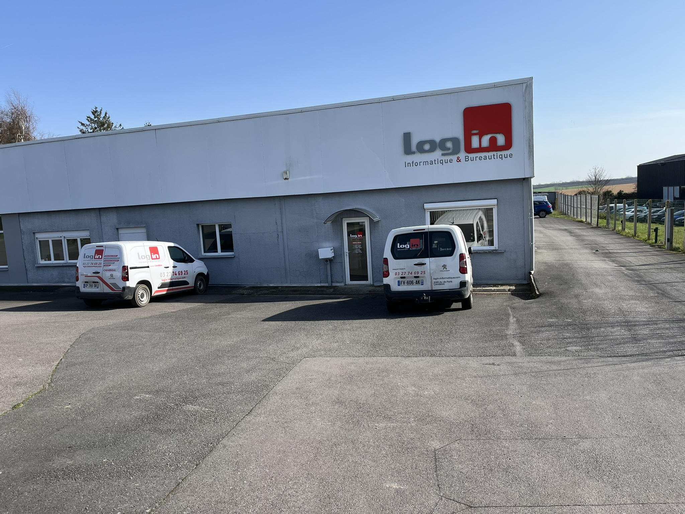
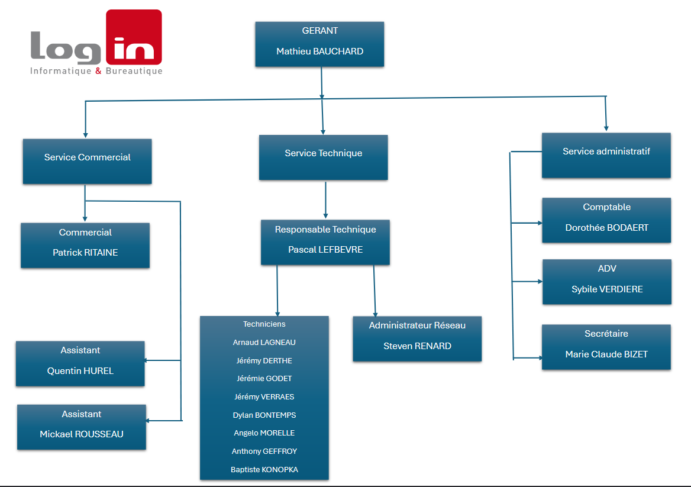
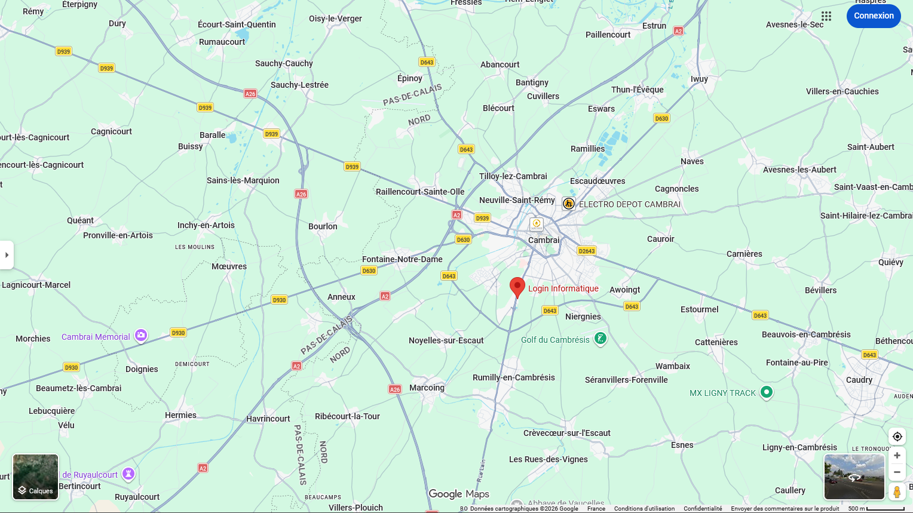
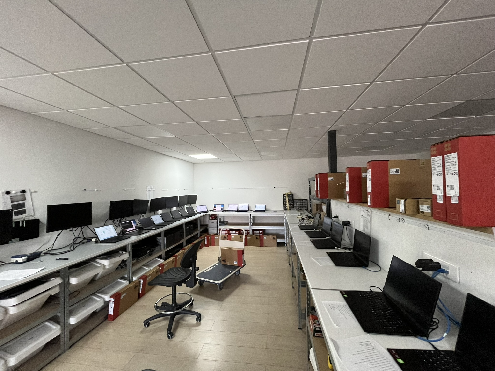
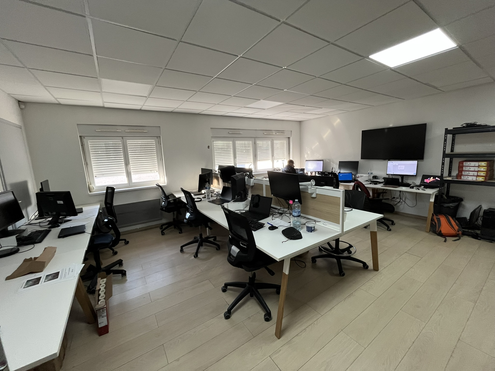

🏢 Présentation générale
LOGIN Informatique est une entreprise spécialisée dans la vente et la maintenance de matériel informatique. Elle fournit ses services principalement aux entreprises de la région de Cambrai.

Localisation : 2055 avenue de Paris, 59400 Cambrai
Effectif : 15 employés
Secteur d'activité : Services informatiques B2B
L'entreprise propose une gamme complète de services informatiques incluant la vente de matériel, l'installation et la configuration de postes de travail, la maintenance informatique, ainsi que l'administration et la supervision des infrastructures réseau de ses clients.
🔧 Organisation de l'entreprise
LOGIN Informatique est structurée de manière à assurer une réactivité optimale face aux besoins de ses clients. L'entreprise est organisée en plusieurs pôles :
Pôle Commercial : Gestion de la relation client, prospection
et vente de solutions informatiques.
Pôle Technique : Installation, configuration et maintenance
du matériel informatique.
Service Informatique : Administration des infrastructures,
support technique et gestion des projets IT.
Direction : Pilotage stratégique et gestion administrative
de l'entreprise.
Cette organisation permet à LOGIN Informatique d'offrir un service complet et personnalisé, de la conception à la maintenance des solutions informatiques.
📊 Organigramme de l'entreprise
Voici la structure organisationnelle de LOGIN Informatique, présentant les différents services et l'équipe qui compose l'entreprise.

📍 Localisation
LOGIN Informatique est située au 2055 avenue de Paris à Cambrai (59400), au cœur de la région Hauts-de-France. Cette localisation stratégique nous permet d'intervenir rapidement auprès de nos clients dans toute la région.

🏭 Nos locaux
LOGIN Informatique dispose de locaux modernes et fonctionnels adaptés aux besoins de ses activités. L'entreprise comprend un atelier technique entièrement équipé pour la préparation, la maintenance et la réparation du matériel informatique, ainsi qu'un espace de bureau pour l'équipe administrative et technique.

Espace de bureau

Atelier technique
L'atelier technique est le cœur de notre activité de maintenance et de préparation. Il est équipé de postes de travail dédiés au diagnostic, à la configuration et aux tests de matériel informatique avant livraison chez nos clients.
L'espace de bureau accueille l'équipe administrative, commerciale et une partie de l'équipe technique. Cet environnement de travail collaboratif favorise les échanges et la coordination entre les différents services.
💻 Service informatique
Le service informatique joue un rôle central dans l'entreprise. Il assure la gestion complète des infrastructures IT des clients ainsi que le support technique.
Missions principales :
• Administration des serveurs (Windows Server, Linux)
• Gestion et supervision des réseaux clients
• Configuration et maintenance des postes de travail
• Mise en place de solutions de sauvegarde et de sécurité
• Support technique et assistance aux utilisateurs
• Virtualisation et migration vers le cloud
Environnement technique :
• Systèmes : Windows Server 2019/2022, Debian, Ubuntu
• Virtualisation : VMware ESXi, Hyper-V
• Réseau : Cisco, HP ProCurve, pfSense
• Outils : Active Directory, Microsoft 365, outils de ticketing
• Supervision : PRTG Network Monitor, Zabbix
🎓 Contexte de l'alternance
J'ai intégré LOGIN Informatique en tant qu'alternant en BTS SIO SISR dans le cadre de ma formation. Mon rôle consiste à assister l'équipe technique dans la gestion des infrastructures et le support aux clients.
Cette alternance me permet de mettre en pratique les connaissances théoriques acquises en cours tout en développant de nouvelles compétences techniques sur des environnements professionnels réels.
Mes responsabilités incluent :
• Participation à l'administration des serveurs et des réseaux clients
• Installation et configuration de postes de travail
• Intervention sur des incidents techniques (support niveau 1 et 2)
• Documentation des procédures et des interventions
• Participation aux projets d'infrastructure (migration, mise à jour, déploiement)
Cette expérience professionnelle est essentielle pour ma formation et me prépare efficacement à mon futur métier d'administrateur systèmes et réseaux.
📊 Points clés de l'entreprise
Forces : Proximité avec les clients, expertise technique, réactivité et service personnalisé.
Valeurs : Qualité de service, innovation technologique, accompagnement des clients dans leur transformation digitale.
Clientèle : PME et TPE de la région Hauts-de-France, tous secteurs d'activité confondus.